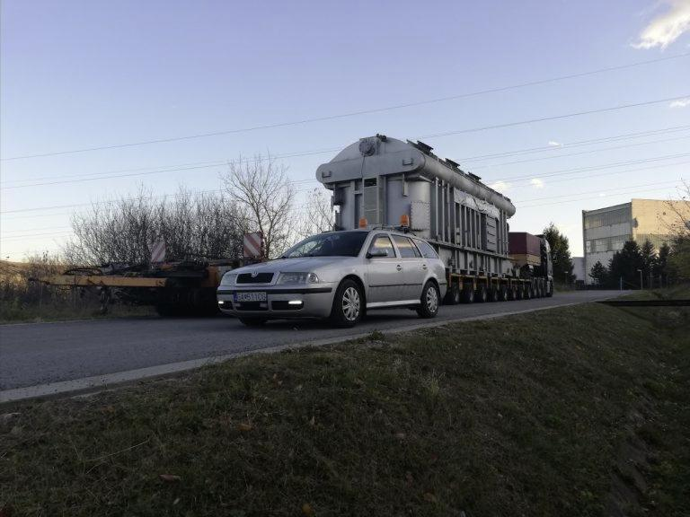

Odborné sprievody, prepravné povolenia a prieskum trás pre náklady, ktoré sa nezmestia do bežných rozmerov. Na trhu pôsobíme od roku 2003.
Nadrozmerným prepravám sa venujeme od roku 2003.
Vybavíme prepravné povolenia pre prepravy v rámci celej EÚ.
Zaťažiteľnosť mostov a prejazdnosť riešime skôr, ako vozidlo vyrazí.
ADI TRADE s.r.o. pôsobí na trhu od roku 2003 so zameraním na prepravy nadrozmerných a nadmerných nákladov. Postaráme sa o odborný sprievod, povolenia aj o celkovú koncepciu prepravy — od prvého merania trasy až po zloženie nákladu na mieste.
Tam, kde to trasa vyžaduje, koordinujeme aj montážne firmy, správcov sietí, železnice a políciu, aby konvoj nikde nezastal.

Sprievodné vozidlá a odborný sprievod nadrozmerných nákladov počas celej trasy.
Asistencie pri nakládkach a vykládkach na území Slovenskej republiky.
Vybavenie povolení na prepravy v rámci celej Európskej únie.
Zaťažiteľnosť mostov a ich prejazdnosť overujeme ešte pred výjazdom.
Navrhujeme koncepciu prepráv a zabezpečujeme vhodnú dopravnú techniku.
Zabezpečenie prepravy nákladu z ktorejkoľvek krajiny Európskej únie.
Zabezpečenie prítomnosti technických a montážnych firiem, spojov a telekomunikácií, energetických závodov, železníc a polície — vždy, keď si to trasa vyžaduje.


Pošlite nám rozmery, váhu a predpokladaný termín. Ozveme sa s návrhom riešenia a cenou.
 Odborné sprievody, povolenia a plánovanie trás pre nadrozmerné prepravy po celej EÚ.
Odborné sprievody, povolenia a plánovanie trás pre nadrozmerné prepravy po celej EÚ.